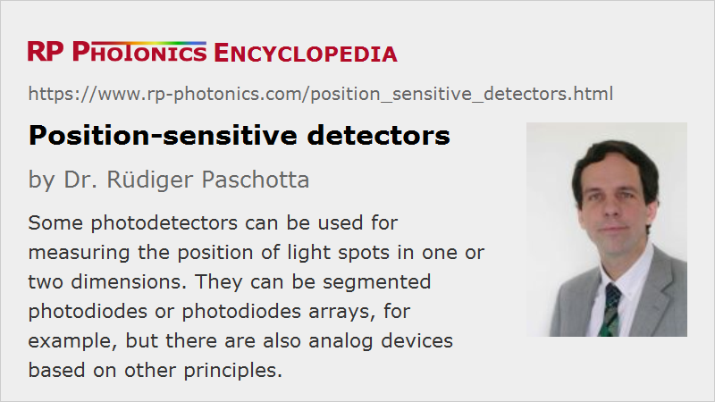

Position-sensitive Detectors
Acronym: PSD = position-sensitive diode (or detector or device)
Definition: photodetectors which can detect the position of a light spot in one or two dimensions
Alternative terms: position detectors, position sensing detectors
More general term: photodetectors
German: positionsempfindliche Detektoren
Categories: photonic devices, light detection and characterization, optoelectronics, vision, displays and imaging, optical metrology
How to cite the article; suggest additional literature
Author: Dr. Rüdiger Paschotta
Position-sensitive detectors are photodetectors with which one can measure the position of a light spot in one or two dimensions, normally with a relatively high speed. The mentioned light spot is usually caused by a laser beam hitting the detector. One can then accurately measure small reflections of such a beam, for example. Such detectors can be used to monitor beam alignment (laser spot trackers) and (within a feedback system) to stabilize the position of a laser beam (auto aligners). Another application is to measure distances by triangulation.
Position-sensitive detectors can be based on different operation principles, which are explained in the following. Such devices are available as separate optoelectronic components (e.g. quadrant photodiodes), but also as complete devices with additional electronics, housing and mount, etc. Most devices are based on photodiodes or photoresistors, but there are also position-sensitive photomultipliers.
Segmented Photodetectors
One measurement principle for position sensing is to use a kind of segmented photodetector, which can measure optical intensities for a few or even many different spatial positions (pixels). From those data, one can calculate the position of the light spot.
Dual-segment and Quadrant Photodiodes

In the simplest case, a photodiode with two segments (a dual-segment photodiode or dual-cell photodiode) is used, with only a narrow gap between them (see Figure 1). The beam radius of the incident beam is chosen such that at least for beam positions in the intermediate range both detectors obtain some optical power (see Figure 2). From the relative signals related to the two segments, one can calculate the beam position.
Note that for this kind of device one obtains a nonlinear dependence of the signal on the position; one may have to apply some linearization technique. In addition, the relative intensities depend not only on the beam position, but also on the beam radius. For those reasons, such segmented diodes are not ideally suited for quantitative position measurements. They are useful, however, for checking whether a beam is properly centered (centring indicators), e.g. within a feedback system for automatic alignment. For example, such devices are used in devices for optical data storage (CD-ROM, DVD etc.).
Similarly, one can use a quadrant photodiode with four detector segments (Figure 3), with which one can monitor positions in two dimensions.
Segmented photodiodes are often based on silicon PIN technology, with sensitivity in the visible spectral range and up to roughly 1 μm, but they are also available with other semiconductors such as indium gallium arsenide (InGaAs) for detection at longer infrared wavelengths.
The uniformity of response between different detector segments is of course an important quality figure of such devices.
Photodiode Arrays
There are photodiode arrays containing a larger number of photodiode segments either in a linear array for one-dimensional position sensing or on a two-dimensional grid. Such devices can contain hundreds or thousands of diodes.
In principle, one could derive the spot position simply by taking the coordinates of the pixel (detector segment) receiving the highest optical power. The spatial resolution would then be identical to the pixel spacing. A much better resolution can be achieved by using data from several pixels, assuming that the light spot is large enough. For example, one may fit a calculated curve to the pixel data, calculating the position and the beam radius is fit parameters.
A computationally simpler approach is to calculate the centroid via first moments of the intensity distribution, possibly after discarding pixels which have intensity values below a certain threshold value or are spatially too far away from the intensity maximum.
CCD and CMOS Sensors
A much larger number of pixels is possible when using an architecture which does not require one wire connection for each detector pixel. Most common are image sensors of CCD and CMOS type. Using software executed on a microprocessor, one can apply an algorithm which minimizes the sensitivity of such detectors to background light, for example, so that reliable position sensing with very high resolution and accuracy is achieved. However, the cost of such sensors including all the required digital electronics is substantially higher than for simple analog detectors.
See the article on image sensors for more details.
Lateral Effect Photodiodes
A completely different approach for position sensing is based on lateral effect photodiodes. We first consider the simplest possible type, which is a one-dimensional sensor. The photodiode chip may have an ordinary cathode connection on one side, while the other side has a transparent resistive layer with anode connections on its extreme sides. The distribution of photocurrents to the two anode connections (retrieved with low-impedance amplifiers) depends on the beam position: the more the beam moves to one side, the more of the photocurrent is delivered to the corresponding anode. For a high accuracy, the light intensity should be sufficiently high for good signal strength, but not cause detector saturation.
From the difference of photocurrents, divided by the sum of photocurrents, one obtains a signal which can have a reasonably linear dependence on the beam position. There is no substantial influence of the beam radius on that signal. However, the operation can of course be substantially disturbed by additional light spots which may be caused by parasitic reflections in optical elements, for example.
In a p–n photodiode, the resistive layer can be a semiconductor layer with a relatively low doping concentration.
Instead of the common p–n junction photodiode, one may use a metal–oxide–semiconductor (MOS) architecture with Schottky junctions, which can be well integrated into CMOS chips. Here, the resistive layer may be realized with indium tin oxide (ITO).
Lateral effect photodiodes can also be made for sensing in two dimensions, e.g. with an active area of 10 mm × 10 mm. One possibility is to have anode connections at the four edges of a square-shaped active region (tetra-lateral photodiode). That simple approach typically leads to reduced linearity for beam positions which are substantially away from the center position. Improved linearity can be obtained with modified geometric shapes of the active region, e.g. a pincushion shape. Another possibility is to have resistive layers on both sides (duo-lateral photodiode); the cathode side may be used for sensing in x direction and the anode side for the y direction, for example. Tetra-lateral devices usually exhibit a higher speed than the duo-lateral ones.
The analog signals from lateral effect photodiodes allow precision sensing with a reasonable accuracy and resolution while not requiring complicated drive electronics. The accuracy may be limited by detector noise and by systematic errors e.g. in the form of non-uniformities of resistance and nonlinearities. It may be a fraction of a millimeter for a 10 mm wide device, for example, if a very high bandwidth (see below) is not required.
The measurement bandwidth of such detectors can be tens or hundreds of kilohertz, depending on the required resolution: a higher position resolution requires a better signal-to-noise ratio, which can be achieved only in conjunction with a lower measurement bandwidth. Generally, position-sensitive detectors are substantially slower than simple photodiodes without spatial resolution.
Some devices contain additional electronics, for example transimpedance amplifiers and additional circuits for obtaining the sum and difference of two photocurrents. One may then simply obtain two analog output signals for the x and y direction.
Some lateral effect photodiodes are used with a different operation principle, involving precise measurements of the relative temporal positions of current spikes induced by short laser pulses.
Another possibility is to implement the basic principle of a lateral effect diode with a one- or two-dimensional photodiode array, where one uses rows of resistors to convert positions into currents. One may then obtain a position sensing device with high spatial resolution but relatively few electrical connections (far less than one per photodiode).
Position-sensitive Photomultipliers
There are photomultipliers which are position-sensitive and utilize essentially the same basic principles as explained above. For example, there are multi-anode devices which provide the spatial information basically just as multi-segment photodiodes. Others work in a way similar to lateral effect photodiodes, where the relative difference of two photocurrents is taken as a measure for position in one dimension.
Suppliers
The RP Photonics Buyer's Guide contains 12 suppliers for position-sensitive detectors. Among them:
Questions and Comments from Users
Here you can submit questions and comments. As far as they get accepted by the author, they will appear above this paragraph together with the author’s answer. The author will decide on acceptance based on certain criteria. Essentially, the issue must be of sufficiently broad interest.
Please do not enter personal data here; we would otherwise delete it soon. (See also our privacy declaration.) If you wish to receive personal feedback or consultancy from the author, please contact him e.g. via e-mail.
By submitting the information, you give your consent to the potential publication of your inputs on our website according to our rules. (If you later retract your consent, we will delete those inputs.) As your inputs are first reviewed by the author, they may be published with some delay.
See also: photodiodes, photodiode arrays, image sensors, triangulation
and other articles in the categories photonic devices, light detection and characterization, optoelectronics, vision, displays and imaging, optical metrology
|  |
If you like this page, please share the link with your friends and colleagues, e.g. via social media:
These sharing buttons are implemented in a privacy-friendly way!